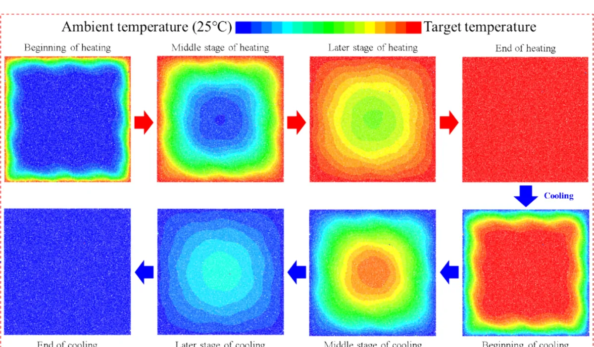
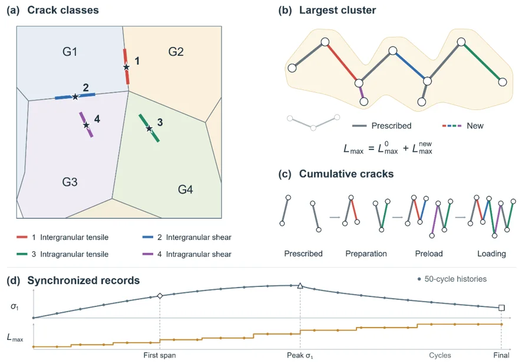
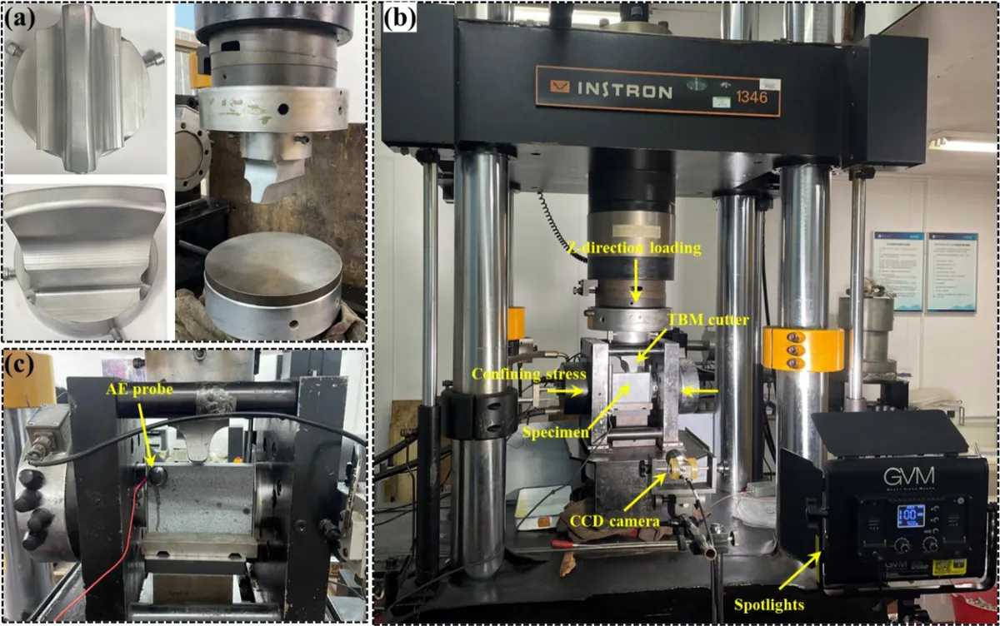

Underground energy
Underground energy storage and thermal–hydraulic–mechanical–chemical coupling.
Humboldt Research Fellow
TU Bergakademie Freiberg · Germany
Understanding rock behavior.
Advancing underground energy.
I study rock fragmentation, coupled processes, and computational geomechanics to support more efficient excavation and clean energy development.
Google Scholar · Last verified: 29 Oct 2026 · i10-index: 33.
I am a Humboldt Research Fellow at TU Bergakademie Freiberg, Germany, hosted by Prof. Heinz Konietzky. I received my PhD from Central South University under the supervision of Prof. Ming Tao.
During my doctoral studies, I was a joint PhD researcher at the University of Melbourne with Prof. Guillermo A. Narsilio. I also worked as a guest researcher at Monash University, collaborating with Prof. P. G. Ranjith.
I have published more than 50 papers in journals including International Journal of Rock Mechanics and Mining Sciences, Rock Mechanics and Rock Engineering, Engineering Geology, Journal of Rock Mechanics and Geotechnical Engineering and Computers and Geotechnics. My publications include five ESI Highly Cited Papers (top 1%) and two papers in Nature Index-listed journals. I have also contributed to more than 30 Chinese invention patent applications.
I serve as Associate Editor for Frontiers in Earth Science and Guest Editor for Applied Sciences. From November 2026, I also serve as Guest Editor for Deep Resources Engineering. My reviewing service includes International Journal of Rock Mechanics and Mining Sciences, Rock Mechanics and Rock Engineering, Journal of Rock Mechanics and Geotechnical Engineering, Tunnelling and Underground Space Technology, International Journal for Numerical Methods in Engineering, and Computers and Geotechnics.
I am listed among the World’s Top 2% Scientists in the 2026 Stanford/Elsevier ranking for single-year scientific impact.

Underground energy storage and thermal–hydraulic–mechanical–chemical coupling.

Grain-based DEM/FDEM models, multi-scale heterogeneity and engineering applications.

Deep rock breakage, fracture mechanisms and efficient mechanized excavation.
16 publications
International Journal of Rock Mechanics and Mining Sciences, 205, 106597.
@article{Yang2026Paper1,
author = {Yang, Zheng and Tao, Ming and Yin, Tubing and Li, Yanliang},
title = {{Cutting performance and fragmentation behavior of rock under confining stress: role of heterogeneity}},
journal = {International Journal of Rock Mechanics and Mining Sciences},
year = {2026},
volume = {205},
pages = {106597},
doi = {10.1016/j.ijrmms.2026.106597},
url = {https://doi.org/10.1016/j.ijrmms.2026.106597},
}
Bulletin of Engineering Geology and the Environment, 85, 149.
@article{Yang2026Paper2,
author = {Yang, Zheng and Tao, Ming and Alqawasmeh, Qusi I. and Luo, Hao and Ranjith, P. G.},
title = {{Particle size and grain fabric effect on mechanical behavior of crystalline rocks using grain-based DEM}},
journal = {Bulletin of Engineering Geology and the Environment},
year = {2026},
volume = {85},
number = {3},
pages = {149},
doi = {10.1007/s10064-026-04799-1},
url = {https://doi.org/10.1007/s10064-026-04799-1},
}
Journal of Rock Mechanics and Geotechnical Engineering, 17(1), 275-290.
ESI Highly Cited · top 1%@article{Yang2025Paper3,
author = {Yang, Zheng and Tao, Ming and Memon, Muhammad Burhan and Zhuang, Dengdeng and Zhao, Yan},
title = {{Microwave irradiation-induced deterioration of rock mechanical properties and implications for mechanized hard rock excavation}},
journal = {Journal of Rock Mechanics and Geotechnical Engineering},
year = {2025},
volume = {17},
number = {1},
pages = {275-290},
doi = {10.1016/j.jrmge.2024.03.034},
url = {https://doi.org/10.1016/j.jrmge.2024.03.034},
}
International Journal of Rock Mechanics and Mining Sciences, 189, 106098.
ESI Highly Cited · top 1%@article{Yang2025Paper4,
author = {Yang, Zheng and Tao, Ming and Ranjith, P.G.},
title = {{Novel insights into grain size effect of stressed crystalline rock using weakened grain boundary model}},
journal = {International Journal of Rock Mechanics and Mining Sciences},
year = {2025},
volume = {189},
pages = {106098},
doi = {10.1016/j.ijrmms.2025.106098},
url = {https://doi.org/10.1016/j.ijrmms.2025.106098},
}
Rock Mechanics and Rock Engineering, 59, 4821–4844.
@article{Yang2025Paper5,
author = {Yang, Zheng and Narsilio, Guillermo A. and Tao, Ming and Fei, Wenbin and Luo, Hao and Memon, Muhammad Burhan},
title = {{Microscale Heterogeneity Effect and Seismic Source Quantification On Stressed Rock During Shearing}},
journal = {Rock Mechanics and Rock Engineering},
year = {2025},
volume = {59},
number = {4},
pages = {4821-4844},
doi = {10.1007/s00603-025-04995-7},
url = {https://doi.org/10.1007/s00603-025-04995-7},
}
Computers and Geotechnics, 186, 107431.
@article{Yang2025Paper6,
author = {Yang, Zheng and Alqawasmeh, Qusi I. and Ma, Jinyin and Dashtgoli, Danial Sheini and Cong, Ziyuan and Li, Yanliang},
title = {{Critical grain size and shear behavior of polycrystalline rocks under confining pressure: A moment tensor-based GBM approach}},
journal = {Computers and Geotechnics},
year = {2025},
volume = {186},
pages = {107431},
doi = {10.1016/j.compgeo.2025.107431},
url = {https://doi.org/10.1016/j.compgeo.2025.107431},
}
Underground Space, 20, 174-196.
ESI Highly Cited · top 1%@article{Yang2025Paper7,
author = {Yang, Zheng and Tao, Ming and Fei, Wenbin and Yin, Tubing and Ranjith, P.G.},
title = {{Grain-based coupled thermo-mechanical modeling for stressed heterogeneous granite under thermal shock}},
journal = {Underground Space},
year = {2025},
volume = {20},
pages = {174-196},
doi = {10.1016/j.undsp.2024.06.003},
url = {https://doi.org/10.1016/j.undsp.2024.06.003},
}
Engineering Fracture Mechanics, 315, 110845.
@article{Yang2025Paper8,
author = {Yang, Zheng and Tao, Ming and Yin, Tubing and Luo, Hao and Chen, Chao and Ranjith, P.G.},
title = {{Fragmentation characteristics of stressed rock with weak interlayers using double TBM cutters}},
journal = {Engineering Fracture Mechanics},
year = {2025},
volume = {315},
pages = {110845},
doi = {10.1016/j.engfracmech.2025.110845},
url = {https://doi.org/10.1016/j.engfracmech.2025.110845},
}
Rock Mechanics and Rock Engineering, 57, 10467-10489.
@article{Yang2024Paper9,
author = {Yang, Zheng and Tao, Ming and Yin, Tubing and Memon, Muhammad Burhan and Ranjith, P. G.},
title = {{Grain-Based Modeling for Heterogeneous Rock Fragmentation Under Stressed Conditions and TBM Cutter Spacing Optimization}},
journal = {Rock Mechanics and Rock Engineering},
year = {2024},
volume = {57},
number = {12},
pages = {10467-10489},
doi = {10.1007/s00603-024-04099-8},
url = {https://doi.org/10.1007/s00603-024-04099-8},
}
Engineering Geology, 339, 107645.
@article{Yang2024Paper10,
author = {Yang, Zheng and Tao, Ming and Fei, Wenbin and Yin, Tubing and Gu, Xiaoying and Narsilio, Guillermo A.},
title = {{A coupled thermo-mechanical model for investigating cracking and failure of composite interbedded rock}},
journal = {Engineering Geology},
year = {2024},
volume = {339},
pages = {107645},
doi = {10.1016/j.enggeo.2024.107645},
url = {https://doi.org/10.1016/j.enggeo.2024.107645},
}
Journal of Energy Storage, 83, 110631.
ESI Highly Cited · top 1%@article{Yang2024Paper11,
author = {Yang, Zheng and Tao, Ming and Ranjith, P.G. and Zhuang, Dengdeng and Memon, Muhammad Burhan and Luo, Hao},
title = {{Multiscale damage and thermal-stress evolution characteristics of rocks with thermal storage potential under thermal shocks}},
journal = {Journal of Energy Storage},
year = {2024},
volume = {83},
pages = {110631},
doi = {10.1016/j.est.2024.110631},
url = {https://doi.org/10.1016/j.est.2024.110631},
}
Engineering Fracture Mechanics, 310, 110479.
@article{Yang2024Paper12,
author = {Yang, Zheng and Tao, Ming and Yin, Tubing and Wu, Xingyu and Xiang, Gongliang and Xu, Yuanquan},
title = {{Microwave-assisted TBM cutter for efficient hard rock fracturing in high stress environments}},
journal = {Engineering Fracture Mechanics},
year = {2024},
volume = {310},
pages = {110479},
doi = {10.1016/j.engfracmech.2024.110479},
url = {https://doi.org/10.1016/j.engfracmech.2024.110479},
}
Energy, 292, 130489.
ESI Highly Cited · top 1%@article{Yang2024Paper13,
author = {Tao, Ming and Yang, Zheng and Zhao, Yan and Wu, Xingyu and Wu, Chengqing},
title = {{Failure characteristics of microwave heat-treated stressed sandstone: Implications for deep rock breakage using TBM cutting}},
journal = {Energy},
year = {2024},
volume = {292},
pages = {130489},
doi = {10.1016/j.energy.2024.130489},
url = {https://doi.org/10.1016/j.energy.2024.130489},
}
Fatigue and Fracture of Engineering Materials and Structures, 46(3), 814-834.
@article{Yang2023Paper14,
author = {Yang, Zheng and Yin, Tubing and Wu, You and Zhuang, Dengdeng and Yin, Jiewen and Ma, Jiexin},
title = {{Mixed-mode I/II fracture properties and failure characteristics of microwave-irradiated basalt: An experimental study}},
journal = {Fatigue \& Fracture of Engineering Materials \& Structures},
year = {2023},
volume = {46},
number = {3},
pages = {814-834},
doi = {10.1111/ffe.13897},
url = {https://doi.org/10.1111/ffe.13897},
}
Theoretical and Applied Fracture Mechanics, 122, 103571.
@article{Yang2022Paper15,
author = {Yang, Zheng and Yin, Tubing and Zhuang, Dengdeng and Wu, You and Yin, Jiewen and Chen, Yongjun},
title = {{Effect of temperature on mixed mode I/III fracture behavior of diorite: An experimental investigation}},
journal = {Theoretical and Applied Fracture Mechanics},
year = {2022},
volume = {122},
pages = {103571},
doi = {10.1016/j.tafmec.2022.103571},
url = {https://doi.org/10.1016/j.tafmec.2022.103571},
}
International Journal of Damage Mechanics, 31(8), 1139-1164.
@article{Yang2022Paper16,
author = {Yin, Tubing and Yang, Zheng and Wu, You and Tan, Xiaosong and Li, Mingjian},
title = {{Experimental investigation on the effect of open fire on the tensile properties and damage evolution behavior of granite}},
journal = {International Journal of Damage Mechanics},
year = {2022},
volume = {31},
number = {8},
pages = {1139-1164},
doi = {10.1177/10567895221092168},
url = {https://doi.org/10.1177/10567895221092168},
}
Try another title, author, journal or year.
Mar 2026 — Present
TU Bergakademie Freiberg · Germany
Geotechnical Institute · Host: Prof. Heinz Konietzky
Aug 2024 — Mar 2025
Monash University · Australia
Deep Earth Energy Research Laboratory · Collaborative Supervisor: Prof. P. G. Ranjith
Sep 2022 — Dec 2025
Mar 2024 — Mar 2025
The University of Melbourne · Australia
Supervisor: Prof. Dr. Guillermo Narsilio Ferrero
CN202310213745.5 · China · 2023
CN202311586560.5 · China · 2024
CN202311820825.3 · China · 2024
CN202410329362.9 · China · 2024
CN202410747583.8 · China · 2024
CN202410747577.2 · China · 2024
Journals I have published in · rock mechanics, geotechnics and energy
Open to collaborations in geotechnical engineering and geophysics.